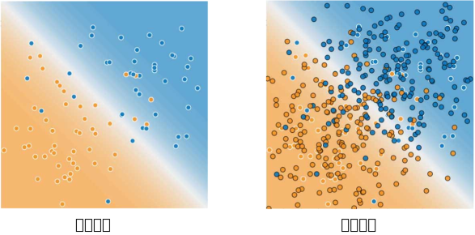

训练集和测试集 (Training and Test Sets)：拆分数据
上一单元介绍了将数据集分为两个子集的概念：
- 训练集 - 用于训练模型的子集。
- 测试集 - 用于测试训练后模型的子集。
您可以想象按如下方式拆分单个数据集：

图 1. 将单个数据集拆分为一个训练集和一个测试集。
确保您的测试集满足以下两个条件：
- 规模足够大，可产生具有统计意义的结果。
- 能代表整个数据集。换言之，挑选的测试集的特征应该与训练集的特征相同。
假设您的测试集满足上述两个条件，您的目标是创建一个能够很好地泛化到新数据的模型。我们的测试集充当新数据的代理。以下图为例。请注意，从训练数据中学习的模型非常简单。该模型的表现并不完美，出现了一些错误的预测。不过，该模型在测试数据上的表现与在训练数据上的表现一致。也就是说，这个简单的模型没有过拟合训练数据。

图 2. 对照测试数据验证训练后的模型。
请勿对测试数据进行训练。 如果您的评估指标取得了意外的好结果，则可能表明您不小心对测试集进行了训练。例如，高准确率可能表明测试数据泄露到了训练集。
例如，假设一个模型要预测某封电子邮件是否是垃圾邮件，它使用主题行、邮件正文和发件人的电子邮件地址作为特征。我们按照 80-20 的拆分比例将数据拆分为训练集和测试集。在训练之后，该模型在训练集和测试集上均达到了 99% 的精确率。我们原本预计测试集上的精确率会低于此结果，因此再次查看数据后发现，测试集中的很多样本与训练集中的样本是重复的（由于疏忽，我们在拆分数据之前，没有将输入数据库中的相同垃圾邮件重复条目清理掉）。我们无意中对一些测试数据进行了训练，因此无法再准确衡量该模型泛化到新数据的效果。